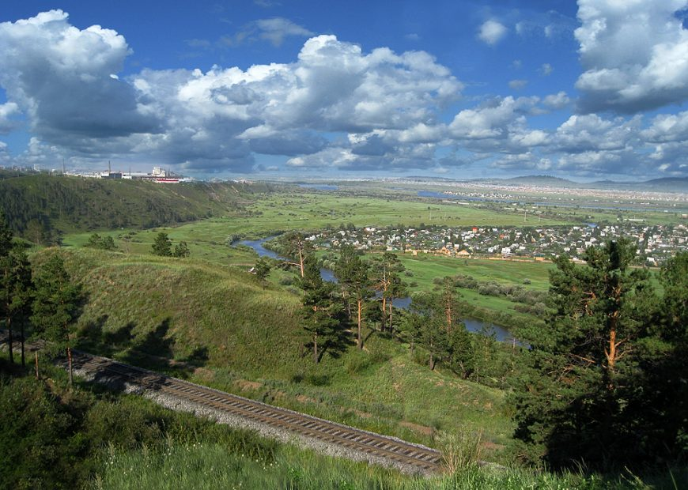

| Дек. | Янв. | Фев. | Мар. | Апр. | Май. | Июн. | Июл. | Авг. | Сен. | Окт. | Ноя. |
|---|---|---|---|---|---|---|---|---|---|---|---|
| -19.3° | -23.4° | -17.9° | -7.4° | +2.4° | +10.6° | +25.9° | +29.8° | +24.1° | +9.6° | +0.7° | -10.1° |
Улан-Удэ расположен в умеренном климатическом поясе, климат резко континентальный, погода может очень радикально и неожиданно меняться за короткие промежутки времени. Летом температура может подниматься до 40 градусов, а зимой (что не радует) опускаться до 45 градусов. Но, во всяком случае, это практически самые критичные моменты, которые зарегистрированы за все время существования. С другой стороны зимой нет никакой слякоти, а летом все лужи очень быстро высыхают, не оставляя и следа. Воздух в Улан-Удэ значительно чище, чем в том же Новосибирске, но тоже не идеален. В последние годы в несколько раз увеличилось количество автомобилей, а также работает ТЭЦ и несколько других загрязняющих предприятий. Но все это по большей части компенсируется тем, что вокруг города значительный лесной массив, ежедневно очищающий воздух. В 130 километрах от города расположено знаменитое озеро Байкал, считающееся самым уникальным озером во всем мире. Самое удивительное, что озеро способно самостоятельно фильтроваться и очищать себя, оставляя лишь кристально чистую воду. Вокруг озера находится шикарная природа, есть даже такие места, куда не ступала нога человека. Это огромные просторы для исследований и путешествий.
Город растет в сторону юго-запада, центр города постоянно застраивается новыми магазинами и торговыми центрами. О ценах на коммунальные услуги можно сказать, что их стоимость оставляет желать лучшего. В среднем в месяц полная стоимость всех коммунальных услуг в двухкомнатной квартире в новостройке составит три тысячи рублей и более. Во всяком случае все зависит от того, где расположено ваше жилье и какое оно.Основными проблемами города на сегодняшний день являются пробки и состояние дорог. Дороги ежегодно ремонтируются по всему городу, но это практически не улучшает ситуацию. Относительно хорошие дороги находятся лишь в центре города, а по окраинам состояние их довольно-таки прискорбное. Множество «заплаток», которые уже друг на друга накладываются. Людям приходится с этим мириться и выбирать наиболее оптимальный путь, пусть и более длинный. Обеспеченность школами в городе хорошая. В каждом районе есть большое количество школ, гимназий, несколько интернатов, школы с физико-математическим уклоном и так далее. С детскими садами же дело обстоит несколько хуже, несмотря на то, что за последние два года построено около 5 новых детских садов, и количество мест увеличилось.В городе наиболее распространенным общественным транспортом являются маршрутные такси, по большей части «Истаны» и Газели. Но за последние несколько лет появилось большое количество новых и вместительных автомобилей. Также в городе ездят трамваи и автобусы по разнообразным маршрутам. О такси наверное нет смысла и писать, т.к. как и в любом другом более-менее развитом городе их огромное количество.
По последним данным на начало 2017 года в городе насчитывается около 432 тысячи зарегистрированных человек, но как отмечает правительство, по факту в городе проживает на сто тысяч человек больше, чем зарегистрировано. Уровень смертности трудоспособного населения города в последние годы снизился на 14,5 процентов и составил 688 случаев на сто тысяч человек. Между тем он всё ещё остаётся достаточно высоким. Показательно и то, что многие улан-удэнцы продолжают умирать от отравления алкоголем.
В Улан-Удэ с конца 20 века увеличивается доля бурятского населения, т.к. после развала СССР практически со всех деревень и поселков Бурятии многие семьи бурят начали переезжать в город из-за отсутствия работы, поэтому теперь в Улан-Удэ около 32% бурят, 62% русские, а также другие национальности.
Улан-Удэ в 1938 году разделили на три района: Железнодорожный, Советский, Октябрьский, каждый из которых в свою очередь делится на более мелкие территории — микрорайоны. Железнодорожный район был образован рядом с ЖД вокзалом и охватывает прилегающие к нему территории, на которых расположены различные предприятия, имеющие отношение к поездам.Район включает в себя множество микрорайонов, каждый из которых имеет как достоинства, так и недостатки, вот несколько из основных микрорайонов: Верхняя Березовка — это элитный микрорайон в 20 минутах езды от центра города. В него входит множество шикарных жилмассивов, летний лагерь для детей, ипподром, лыжные базы и этнографический музей, и самое главное — все это расположено на природе, на свежем воздухе. Стоимость жилья вполне приемлемая: от 1,7 млн. рублей за участок на 4 сотки с коттеджем от 180 квадратов жилой площади. Ниже можно увидеть новый клубный жилой комплекс «Европа». Это около 40 домовладений с повышенной площадью (до 500 кв.м.) в веллхаусах уникальной для региона архитектуре Старой Европы.